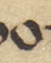

On page 98 of Revue Celtique Vol. XII, Whitley Stokes’ translation of the Cath Maige Tuired cuts off, leaving a speech given by Lugh to the Tuatha Dé Danann untranslated due to the difficulty of the language. As far as I can tell, there are three authors who have tried to tackle this passage, being Isolde Carmody in this post, as well as Bernard Mees in his Celtic Curses, and one by Morgan Daimler (they/them), though Daimler calls herself ‘not a professional translator… a self-taught amateur’ in the book’s foreword. Carmody’s translation is, in my view, also amateurish, and Mees’ is only partial, leaving out a difficult portion in the middle; Daimler’s is somewhat better than Carmody’s but still falls into too many traps. So in the interest of the freedom of all knowledge, I will translate it myself, open to everyone.
The manuscript, MS 5280 in the Harleian collection, was written in the 16th century by Giolla Riabhach Ó Cleirigh, a member of the famous Ó Cléirigh family of scribes and intellecutals (Cléirigh or cléirech is ultimately from Latin clericus or clerk). The Cath story from folio 63r-69v was transcribed by Stokes, but he neglected the “Song of Lugh” which I am interested in here. Rudolf Thurneysen, thankfully, finished the transcription in Zeitschrift fur Celtische Philologie Vol. XII pg. 403, along with the other portions of the Harleian 5280 which Stokes left untranslated, but did not offer a translation of his own. This transcription was apparently used by Elizabeth Gray in her 1982 translation of the Cath, though she too left this song untranslated. There are many words which are abbreviated by a ‘macron’ (see below) which leaves ambiguity at many parts of the text and which make translation of an already-ambiguous poetic text extremely difficult. But modern dictionaries and the online availability of pretty much all Old Irish texts as references give a modern translator an equal advantage.
Lugh chants this chant before the assembled army of the Tuatha Dé Danann standing before the Fomorian troops, of which it is said “to attack the Fomorian host on that day was ‘striking a head against a cliff,’ was ‘a hand in a serpent’s nest,’ was ‘a face up to lire.’” He stands on one leg, with one arm, and one eye while circling the Tuatha Dé, demonstrating an instance of corrguinecht, the Old Irish magical stance often paired with glám dícenn, magical poetry.
This endeavor must, then, begin from first principles with a transcription of the manuscript, which I will give here.
The Scribe’s Hand
We must begin transcription by analyzing the scribe’s handwriting, including the common letters and abbreviations, ligatures, and lenitions. Note that the Old, Middle, and Modern Irish alphabets do not share all of the English alphabet’s letters, such as J, K, W, or X, which are absent.
| English Letter | Scribe’s Letter | English Letter | Scribe’s Letter | |
|---|---|---|---|---|
| A | L | |||
| B | M | |||
| C |  |
N | ||
| D | O |  | ||
| E |  |
P | ||
| F | R | |||
| G | S | |||
| H | T |  |
||
| I | U |
Ligatures
Most letters follow a consistent script, a form of insular script, but a close reader may notice some aberrant symbols. The scribe, to save space, will often combine two letters into one glyph in a process called “ligature”. A table of some of these occurrences is presented:
| English Letters | Scribe’s Glyph | English Letters | Scribe’s Glyph |
|---|---|---|---|
| A+R | E+T | ||
| B+R | I+R | ||
| D+E |  |
O+R | |
| D+O | S+I | ||
| E+C | D+E | |
|
| E+I | D+E+A | ||
| E+N | D+E+G | ||
| E+R | D+E+N |
See how in D ligatures, the D glyph, which usually has a nearly-horizontal leftward stroke on top, is rotated so that it’s top stroke points upwards, making it appear more similar to an A. Also note how in R ligatures, the downstroke that forms the spine of the R glyph can be completely omitted, and only the arm of the glyph left remaining.
It should be said that such a stroke only represents an R if the lower portion moves to the right as it does in a regular R character: moving to the left means something utterly different. See this abbreviation which uses a similar falling arm, but which has a bottom stroke curving leftward, looking similar to a modern semicolon (;) or a yogh symbol (ȝ) of Old English. This word ultimately is “AMNUS”, meaning “cruel”, with the final arm representing the “-US”.
| R | R-Ligature | -US |
|---|---|---|
The use of ligature rests wholly on the scribe’s preference at the time of writing. For example, we can see him write the letters E+T either as ligature or separately at different locations on the folio:
| ET Ligature | ET Standalone |
|---|---|
Abbreviations
Many words are shortened by means of abbreviation, and most of those by a macron or bar above the letter. The reader is meant to understand that the word ending which has been abbreviated is so common, or so easily derived from context, that writing out the full word is not necessary. We can see at the top of the folio that the scribe abbreviates “Tuatha Dé Danann” as “.t.d.d.”; it is understood that the reader, if he has been reading along, will naturally assume TDD stands for Tuatha Dé Danann from context.
Most abbreviations, though, use a macron. In this phrase below, we have only the letters “FER NER̄” to read from, but one who has been reading the entire story will recall that the conflict is between the fer fomoire (men of the Fomorians) and the fer nErenn (men of Ireland), so it is not necessary to finish writing the word nErenn, one can simply assume.

In fact, we also see the scribe abbreviate the phrase “fine fomoire” on both words, leaving us with only “FĪE FOMR̄” to read (note: a fine is an Old Irish patrilineal kin-group).

Often common Irish words will be shortened due to the commonality or their use. See here the word “D’FHOGAIL”, meaning “for plundering / for defense”; we are meant to infer its common suffix “-ail” based on grammar context:
A word can be expressed entirely through ligature and abbreviation, such as this one which Stokes rendered as “DIDIU”.
One must be an Old Irish scholar to correctly fill in these gaps with the appropriate words, which is why I resolve my uncertainties through Stokes’ methods used in previous sections of this text.
Reading Letters
A reader should also note that in this script, a letter may consist on many strokes, but the initial stroke of a letter is designated by a wedge or triangular stroke (a serif): if a downward stroke does not have this serif, it is not a new letter. See how we can differentiate between the M and N in this word “FOMNAI”:
Despite there being five near-identical downward strokes in the middle of this word, the upper serifs differentiate letter-initial strokes from strokes that continue a letter.
The one exception is the letter U, in which both downstrokes contain a serif. See here the word “LUG”, in which the L and U collectively have three wedges:
But sometimes the scribe writes too quickly and his U’s slide across the folio appearing like a different glyph. Here is the word “TUATH” with a speedily-written U and a lenited T marked with a dot.
We can also see an occasional capital letter, sometimes applied randomly to a letter in a word. There are larger capitals on the margins of the folio, and smaller capital letters inline with a sentence. These are typically easy to identify with their lower-case counterparts.
| Capital | Note |
|---|---|
| Capital A - Marginal | |
| Capital A - Inline | |
 |
Capital R - Marginal |
| Capital D - Inline |
In the word below, the scribe writes an initial capital I, but then also a capital N after it, which could confuse a casual reader. Together this makes the common Old Irish word “intan” meaning “then / while”.
There are also entirely unique symbols used to denote common syllables. The three glyphs below are rendered by Stokes as “CONSE…”.
The entire “Song of Lugh” is preceded by this strange double stroke symbol which, as far as I can tell, corresponds to no letter.
Thurneysen uses this symbol to demarcate a kind of ‘overflow line’ for words that should appear elsewhere in the text. In his transcription he moves the words which come after this strange symbol (but are still on the same line) to after the line that begins “Arotroi cath comartan…”. Presumably the scribe wanted the ‘A’ in “Arotroi” to be larger and to sit on the margin, but didn’t want to waste precious vellum with empty space, so he finished out the previous line with text that was meant to go after the “Arotroi…” line. Therefore, Thurneysen moved the “silsit- …” line to after the “Arotroi…” line.
Here is an example of Stokes doing the same thing for this symbol on folio 67v. He moves the “ol Corpri…” line to after the “Os tusai…” line. The scribe then, again, wanted the first letter of this new paragraph to be larger in the margin. So in my transcription, the “silsit- …” line will also follow after the “Arotroi…” line.
Transcription
The untranslated poem appears on the page as follows:
I will go line by line and merely relocate the letters from insular into Roman script. Note that a dash ‘-’ indicates a macron over the preceding letter, a double parenthesis ‘()’ indicates a curved stroke above the previous letter, and a plus ‘+’ indicates a downstroke with a crossbar.
Arotroi cat comartan isin cath irgal robris comlondo f-slecht- slu- silsit- riaslu- sioabrai iath fer fomnai cuife cithai fir genrogain lentor gala fordomaisit fordomcloisid f-an dechraiged fir duib becc find nomtain- fó fó fé fé cléamainsi no
efit- maim- iernelscoth- trietrenc-daib druag Nimcredbod catha f()c()cha
nesit- mede midege fornemairces f-luachoir loisces ma+tal- tshuides
ma+torain- trogais ni comairsid f()cechnaie go comair ogma sachu go
comair ne- agus talom go comair g()oa- agus esa+u. Drem madh mo dremsie duib
Moslu-so slu- mor murnech mochtsailech bruithe nt-oirech rogeno+
dechraiged fir duib becc find nomtain- fó fó fé fé cléamainsi no
efit- maim- iernelscoth- trietrenc-daib druag Nimcredbod catha f()c()cha
nesit- mede midege fornemairces f-luachoir loisces ma+tal- tshuides
ma+torain- trogais ni comairsid f()cechnaie go comair ogma sachu go
comair ne- agus talom go comair g()oa- agus esa+u. Drem madh mo dremsie duib
Moslu-so slu- mor murnech mochtsailech bruithe nt-oirech rogeno+
et- dacri ataf-roi cath comortai. Arot''i (Stokes' translation resumes here)
Thurneysen’s Transcription
Well before my undertaking of this work, Rudolf Thurneysen completed a transcription of this passage in Zeitschrift fur Celtische Philologie Vol. XII pg. 403, which I will provide now for comparison with my own. Note that a dash once again indicates a macron above the preceding letter, and text in italics has been filled in by Thurneysen in the place of macrons which are sufficiently obvious.
Atroroi cat comartan isincathirgal robris comlondo forslecht- slu- silsit- riaslu- sioa- brai iath fer fomnai . cuifecithai fir genrogain lentor gala. fordomaisit fordomcloisid forandechraiged fir duib becc find nomtam . fó fó fé fé clé amainsi noefit- mann iernelscoth- trietrencerdaib druag. Nimcredbod catha fricricha nesit- mede midege fornemairces forluachoir loisces martal- tṡuides martorainn trogais . incomairsid fricechnaie gocomair ogma sachu gocomair nem 7 talom gocomair grioan 7 esqu Drem níadh modremsie duib Moslu-so slu- mor murnech mochtsailech bruithe nertoirech rogenoir et- dacri ataforroi cath comortai. arotrai.
You may notice, like I did, two errors in this transcription, either due to Thurneysen or, more likely, his printer. The first word Arotroi on the manuscript is here rendered “Atroroi”, meaning “to fail”; and the word nicomairsid is rendered as incomairsid. The former error I attribute to the printer, because the arotrai which ends the poem is printed correctly; the latter I attribute to Thurneysen, since the three downstrokes which make up both in- and ni- can be easily confused, and I am only more confident in my own interpretation because of high-quality digital imagery that isn’t obscured by light and shadow or by tired eyes.
Word Analysis
The words are divided here based on how they appear to me to be separated on the folio.
| Ref. | Written | Old Irish | P.o.S. | English |
|---|---|---|---|---|
| Line 1. | ||||
| 1 | Arotroi | at-reig | Arise! | |
| 2 | cat | cath | battle | |
| 3 | comartan | comart | mutual-striking | |
| 4 | isin | isin | in, at or into | |
| 5 | cath | cath | battle | |
| 6 | irgal | airgal | gen. pl.? | boiling / upheaval / battle / strife |
| 7 | robris | ro + brisid | past. | perfective-marker + break or overthrow, defeat |
| 8 | comlondo | comlann or com + lond | nom. s.? | contest, battle, fight or equally-fierce |
| 9 | f-slecht- (forslecht(aib?)) | for + slecht or sligid | dat. or 3rd. pass. s. | upon, for + hewing, cutting, slaughtering? or lay low, slay, defeat |
| 10 | slu- (slúaig) | slúag | gen. | host, army |
| Line 2. | ||||
| 11 | silsit- (silsiter) | sligid | 3rd. pl. pass. fut. | will lay low, will slay, will defeat |
| 12 | riaslu- (riasluag) | ria + slúag | dat. | before + host, army |
| 13 | sioabrai | síabraid or síabair | adj. or part. | bewitched, aroused to fury, or relating to phantoms |
| 14 | iath | íath | gen. pl. | of the lands / territories |
| 15 | fer | fer | gen. pl. | of the men |
| 16 | fomnai | fo-moinethar | wary, vigilant | |
| 17 | cuife | cuife | cave, den (of animals) | |
| Line 3. | ||||
| 18 | cithai | cit | gen. pl. | sheep |
| 19 | fir | fer | gen. pl. | men |
| 20 | genrogain | cen + rogain | without + choice | |
| 21 | lentor | lenaid (lend + ar or lentar) | 3rd. s. or 3rd. pass. | stay attach to, cling to |
| 22 | gala | gal | gen. s. | heat, mist or war fury, valor |
| 23 | for | for | upon | |
| 24 | domaisit | do-maisi | elaborates, devises, invents, concocts | |
| 25 | for | for | upon, on | |
| 26 | domcloisid | dom + cloisid | to me + listen | |
| 27 | f-an (foran) | fora + n- | upon, on + (relative marker) | |
| Line 4. | ||||
| 28 | dechraiged | dechraigidir | 3rd s. pret. subj. | mark out, distinguish (intrans.) / scatter, stand apart, differ (trans.) |
| 29 | fir | fer | nom. pl. or gen. s. | men or of a man |
| 30 | duib | dub | adj. | black, dark |
| 31 | becc | becc | adj. | small, little / few |
| 32 | find | finn | adj. | bright, white |
| 33 | nomtain- (nomtainn) | noem + táin | holy, sacred + raid, driving-off | |
| 34 | fó | fo | Joy! | |
| 35 | fó | fo | Joy! | |
| 36 | fé | fé | woe! | |
| 37 | fé | fé | woe! | |
| 38 | cleamainsi | clé + amein + si | evil! + thusly / so! + emph. | |
| 39 | no | |||
| Line 5. | ||||
| 40 | efit- | noíb + pít | holy, sacred + food, ration | |
| 41 | maim- (máime?) | mám | fistful | |
| 42 | iernelscoth- | ier + nel + scothach | across, beyond + cloud + fluffy, tufted | |
| 43 | trietrenc-daib | tre + tren + cerdaib | through + strong + arts | |
| 44 | druag | druí | gen. s. | druid |
| 45 | Nimcredbod | ni + me + credbaid | does not + me + shrink, consume, gnaw | |
| 46 | catha | cath | gen. | of battle |
| 47 | f()c()cha (fricricha) | fri + crich | acc. | against, towards + land, territory |
| Line 6. | ||||
| 48 | nesit- | nesaigid | past pass. | were wounded |
| 49 | mede | méit or meide or med | size, greatness or nape, corpse or match, equal opponent | |
| 50 | midege | midach | pl.? | champion, hero / valiant |
| 51 | fornemairces | for + nem + aircisid | 3rd s. pres. ind. | on/upon + heaven + meet/encounter |
| 52 | f-luachoir | for + lúachair or lúachair | on/upon + rushes (i.e. the plant) or brightness, brilliance | |
| 53 | loisces | loiscid | 3rd. s. pres. ind. | burns |
| 54 | ma+tal- (martal) | mar + talam | as + the earth | |
| 55 | tshuides | suidid | 3rd s. pres. ind. | sits |
| Line 7. | ||||
| 56 | ma+torain- (martorainn) | mar + torann | as + thunder, battle din | |
| 57 | trogais | trogaid or trogain | 3rd s. pres. ind. | gives birth, brings forth or sunrise, daybreak (metaph. “sun-birth”) |
| 58 | ni | ni | not | |
| 59 | comairsid | comaircid | inquires, asks / cries out | |
| 60 | f()cechnaie (fricechnaie) | fri + cech + naie | to + every + one | |
| 61 | go | |||
| 62 | comair | comair | adj | in front of |
| 63 | ogma | Ogma | Ogma | |
| 64 | sachu | sochonn? | wise? | |
| 65 | go | |||
| Line 8. | ||||
| 66 | comair | comair | adj | in front of |
| 67 | ne- | nem | heaven | |
| 68 | agus | |||
| 69 | talom | talam | Nom. S. | earth |
| 70 | go | |||
| 71 | comair | comair | adj. | in front of |
| 72 | g()oa- (grioan) | grían | dat. | the sun |
| 73 | agus | conj. | and | |
| 74 | esa+u | ésca | dat. | moon |
| 75 | Drem | dremm | nom. | band, company |
| 76 | niadh | nia | pl. gen. | warrior, champion |
| 77 | mo | mo | pro. | my |
| 78 | dreimsie | dremm + so | Noun | band, company + this / emphatic |
| 79 | duib | dub | adj | black, dark or massive, great |
| Line 9. | ||||
| 80 | Moslu-so | mo + slúag + so | my + army + this, here / emphatic | |
| 81 | slu- | slúag | nom. | host, army, war assembly |
| 82 | mor | mor | adj | great, big |
| 83 | murnech | muirnech | adj | spirited, tumultuous, rowdy, joyous |
| 84 | mochtsailech | moch or mochta + saílech or saílechtu | early, speedy or great, mighty + thoughtful, hopeful or hope | |
| 85 | bruithe | bruithe or bruid | past part.? | boiling, melting |
| 86 | nt-oirech (nertoirech) | nert + airech | pl. | strength + nobles, lords |
| 87 | rogeno+ (rogenoir) | gainithir | pret. 3rd? s? intrans. | is/are born |
| Line 10. | ||||
| 88 | et- (etir) | etir | between | |
| 89 | dacri | da + crí | two + shapes, forms, bodies | |
| 90 | ataf-roi | attá + fo-fich | 3rd. s. perf. pres. subj. | would, could attack |
| 91 | cath | cath | battle, war | |
| 92 | comortai | comart | mutual-striking | |
| 93 | Arot’'i (Arotroi) | at-reig | imp. | Arise! |
Notes on Words
1. “Arotroi” is hard to place, nothing like it appears in eDIL. Thankfully, we need not guess, since on pg. 173 of Ériu 8, within a transcription of the Cath Airtig from the Book of Lecan, we see a scribal note that reads Arotroi (.i. eirig). Eirig (At-reig) is established to mean “rise up”, or here, “Arise!”.
3. eDIL lists this word as a verbal noun of con-oirg, meaning “mutual striking” or “striking together”, implying that the battle in question here is one of two armies striking together in mutual slaughter.
6. gal is listed as “heat, mental hotness”, and irgal is listed as a compound with fichid to mean “battle heat, fury”, and cathirgal appears under cath meaning “battle-fury”. irgal appears in the entry for do-airissedar, where tarrassaid inn irgal is translated as “the conflict paused”. Here we can take cathirgal to be one word, since there is no spacing between letters in the manuscript, and the meaning then becomes something like “the battle-fury broke”.
7. This word usually means “breaks, smashes” according to eDIL, but when combined with cath or irgal, etc, which it is here, then means “overthrows, defeats, routs”.
8. In the same way as comlann is given as com + lán, “equally + full”, I take this word as com + lond, “equally + fierce, angry”. Mees renders this word as “with fury”, which I essentially agree with. The word-final ‘o’ can be an adjectival suffix. In trying to figure out this sentence, I also take this adjective comlondo to be attached to the verb robris, acting as an adverbial modifier giving a meaning of “breaks fiercely” or “overthrows furiously”, which again essentially agrees with Mees’ translation.
9. The first part is obviously for. The second part could be slecht, a noun, meaning a division or the act of hewing, or sligid, a verb, meaning similarly to cut, hew, or throw down (i.e. an army). Both words, and both constructions (i.e. noun or verb) essentially describe the army in question as one that hews habitually, so we can give the English translation of “hewing host” or “over-slaughtering army”, once again in agreement with Mees’ translation. The word-final macron can be assumed as a conjugational ending or declension, and likely monosyllabic, probably slechta or even slechtaib. It can go either way, but I take this word to be the verbal noun of sligid, giving us “upon/on the hewing hosts”.
10. Following the discussion in Note 9, I take slu- here to be slúaig, that is “slúag” in the genitive, since for the noun “forslecht” to describe the slúag we must have forslecht slúaig “the hewing of the host”, or perhaps it is merely forslecht slúag “the hewing of the hosts”.
13. This word is derived either from síabraid or síabair, with the latter pertaining to supernatural beings, phantoms, specters, etc. according to eDIL, and which agrees with Mees’ and Carmody’s translations of this word as “phantom”, and with the former meaning “enchanted, aroused, whipped into a fury, even to a supernatural fury”. I take the former derivation to be superior on the grounds of meaning, since there is no indication of a “phantom host” otherwise, but Lugh is engaging in the act of bewitching and arousing his army through incantation, so this is the army before which is the destruction.
17. See also this word referenced in daire, taken to mean an animal den or thicket.
18. The combination of cuife and cithai makes no sense. The words may even be one word that is split in half by a line break. Mees reads this as cuifecithai “comes together”, and Carmody as “set aside”. Mees’ translation is a reasonable one—he renders it as a form of com + fichid, and we see in eDIL under the entry for com: “Before f (earlier *w) co (cóir), later cob cub (cobair, cobodail, cubaid, cubus, cobfolaid, cobfuil).” With an established -b form of com, he adds fichid which takes on some conjugation, perhaps a form of the preterite singular fechtae “he fought” or passive present plural fichitir “they (pass.) fight”. We can imagine that there is some dialect variance at play, or that the scribe was copying words he didn’t understand the meaning of (pure conjecture of course). I propose that this word is a compound noun of cuife, “cave, den”, and “cit”, “sheep”, the latter of which is a form of cethnat as listed on eDIL, or of cith which is identified with cuilén, “pup, cub”. In any case, giving a meaning of “a den of young pups / sheep”.
21. This word is either lentar, as listed in eDIL for the present passive singular, or a compound of lent/lend + ar, a 3rd person present active, with a meaning of “stays attached to, clings to”. eDIL gives an example of the latter as “co rralsat sis anchoram; ro lend ar bendchopor in derthaige”, giving us a perfect example of lent ar elsewhere. lentar is used more flexibly as a regular passive verb. Along with the next word, gala, we have a meaning of “adhering/one adheres to valor” or “staying/one stays attached to warlike fury”, etc, and a broader meaning of cuife cithai fir gen rogain lentor gala, “a den of sheep are men without wills which adhere to war-fury”.
24. This word is seldom attested, and was only identified 20 years ago by Liam Bretnach, see here, but nonetheless fits perfectly. This would then be an elsewhere-unattested 3rd person plural active indicative form. We could take a meaning of “over-cunning” or “over-scheming”.
27. See the note in eDIL for for, which explains the use of fora + n- in a relative clause which allows for the word to take the form of fora.
28. In the eDIL listing for dechraigidir, we see an identical form in fria ndechraiged, a preterite subjunctive 3rd person singular. So it is tempting to break with pattern and interpret the macron over the ‘f’ which begins this word as friandechraiged instead of forandechraiged, but I find it more likely that this word continues the series of for words. The word should be taken as fora n-dechraiged. As for meaning, this would indicate that the ‘fir’ subsequently mentioned distinguish themselves; we can translate this as “greatly distinguished”.
30. duib or dub has the meaning of “black”, but also of “great, mighty” or “dire,” and is used later interchangeably or with mór. However here I will take it to mean “black” or “dark”. Mees and Daimler use this word when it appears later to mean “to you”, with the modern Irish meaning of daoibh, but I find a form of dub “black” to be far more likely on grounds of grammar and meaning.
33. An alternate reading is nomtam-, an ambiguity which Thurneysen notes, but I view nomtain- as the far more likely reading due to the subtle serif on the middle downstroke of the supposed ‘-m’, indicating that this is actually an -in. This also allows us to accurately evaluate the macron over the ‘n’, as being a common double ‘n’ ending, whereas an ‘m’ ending leaves us with no clear option for the macron. I would like for this word to be a form of something like nomtaid, but there is no such word in any dictionary, so I must interpret this as a compound of noíb + táinn, with a meaning of “sacred, holy + raid, driving-off”, essentially describing what the Tuatha Dé intends to enact upon the Fomorians. The word then is a verb meaning “drives off, raids”. eDIL attests that in Middle Irish the former word is more often written as noem, or similar forms, over noíb. The latter word is well known, but does not appear listed with a double -nn ending; this may be a scribal variation, but may also indicate that the second word is truly a form of tain, meaning “time, while, occurrence”. This meaning is linguistically safer, however on grounds of meaning alone I find this alternative less likely, since “sacred time, holy time” would seemingly be disconnected from any established meaning in this line. However, I am ultimately not very confident in this translation because of the unaccounted-for -nn ending and the leap required to make this a verb. It is also possible that the initial word noem is the final afjective in the list and not connected to tainn.
34. This word has a more literal meaning of “good”, but I translate it as “joy”, to better contrast with the following “woe!” It may be simply a feature of English that woe is thing that is felt, so to keep the pairing consistent, fo .i. maith must likewise become a “goodness that is felt” i.e. joy.
40. no efit-, or noefit- as Thurneysen gives it, is perhaps the most difficult word in this text. Nothing even close to it appears in eDIL or any other common dictionary. So the following explanation will be only tentative at best. However, I suspect this is a compound of noíb + pít; the first element means “holy, sacred”, and is also in my explanation of nomtainn in Note 33, the latter is -fit, a later version of the word pít, meaning a food or ration. This latter element is shown to be used in compound words as the secondary element, such as doborfiit, “water-diet” (i.e. a monk’s fasting), or tercphit, “meager-rations”, and is identified with the Old Irish word proind as well as the Latin uita or vita, meaning the food that sustains one’s life. The initial element noe is a form of noíb or noem, but then we must explain why in nomtainn this word appears with an ‘m’ and in this word without a final ‘m’: this is caused by lenition of the final ‘m’ between two slender vowels with the latter word’s ‘f’ preserved (phonologically the lenited ‘m’ -> ‘v’ may sound identical to an ‘f’). We see the word noem with a lenited ‘m’ in many compounds in the eDIL entry: naem + fót = naomhfód, naem+ port = naomhport, or noem + erlam = naomhērlamh. The ‘m’ in nomtainn remains because of two surrounding broad vowels, which is seen also in eDIL, e.g. noemcorp. Thus, accounting for the macron, we have noefita meaning “holy food” or “divine sustenance”.
41. This word is truly hard to read. The manuscript shows four downstrokes for the final letter(s), which could be, most likely, either an “-im” or an “-nn”. To me there seems to be a slightly larger serif on the second downstroke, implying an “-im” ending and giving this word as “maim-”, with a macron still to be accounted for. The word is ultimately thus a form of the word mám such as máime (gen. s.). A genitive form is given in eDIL to show a unit of measure, e.g. lán máime “full of a fist” or “a fist full”, and we could have a unit of measurement for the supposed fit “food” in the previous word.
42. scoth- I resolve as scothach, meaning “flowery, bushy, tufted”, a good descriptor of the cloud nel that precedes it. The final letter ‘h’ with a macron is unusual, since most lenition in this manuscript is indicated by a fada over the letter instead. Yet a few lines earlier, right before the poem’s beginning, there is another h-with-macron at the end of the word which Stokes renders as timchell. So the h-with-macron is used to show lenition as well as a common ending that could be multiple letters in length. Therefore, we can select the most reasonable ending from eDIL and apply it, which to me is scothach, giving us “fluffy clouds”.
43. The first element is clearly tre, “through”, followed by tren, “strong”, but then we find a ‘c’, a macron, and a suffix -daib. Thurneysen renders this as cerdaib, meaning “arts”, which I am not opposed to. The macron allows for an arbitrary letter or string of letters to fill in, but whatever is there should be something monosyllabic, as this seems to be the typical use of other macrons. eDIL offers some examples of words that fit this description: “chladaib”, “chlandaib”, “cruadaib”, “cerdaib”, “cendaib”, etc. But the meaning of “cerdaib” fits well in Lugh’s oration, giving us trie trén cerdaib druag “through strong druid arts”. See 2 día for occurrences of the phrase cerdaib dé druidechtai, which seems to be a common phrase that is echoed here.
45. This compound word, nimcredbod, is likely ni + me + (a form of) credbaid. The passage in this poem is cited directly in the eDIL entry for credbaid. Also, a nearly identical formation appears in the Cath Airtig text presented in Ériu 8, pg. 172, which gives a similar magical song; there it appears as nom credbad. credbod is the verbal noun of credbaid, and when combined with the next word catha, gives the meaning of “battle does not wither/weary/corrode me”.
47. This word is much compacted, using two superscript marks to abbreviate. Previously when the scribe had used a mark over an ‘f’, Stokes took it to mean ‘fr’ or even ‘fri’, so I will defer to his interpretation. He transcribes the mark below as friu a few pages previously:
48. I take this as a verbal form of 3 ness, which in the eDIL entry references O’Davoren’s Glossary which equates nes .i. crecht. Crecht has an established meaning of “wound”, and the verb nesaigid means the same. Or the form nesit may be the 3rd. person singular of a verb nesaid or nessa which is unlisted in eDIL, but which the scribe may have neologized from the listed word ness, which is common in Old Irish (see Thurneysen’s A Grammar of Old Irish section 524, on adjectives turning into verbs). But as regards the macron over the final ‘t’, I suspect this is a final ‘-he’ or ‘-ha’ which would present us with an imperfect passive form of nesaigid, being nesithe or nesitha, “were wounded”. The more proper form, however, would be nestae or nestha, so I am not utterly convinced of this reasoning.
49. To me the most probable established word compatible here is meide, meaning the trunk of a neck and figuratively a corpse; I view it as most probable because we have instances in eDIL of this word appearing as mede, e.g. méde fri méde or médhe. With nesit- or nesitha as a past participle, we could read “corpses were wounded”.
50. midige is given in the eDIL listing as an adjective in do thig na mná mídige “the valiant women came”. We can take this as a spelling variant, applying to the
51. Mees’ translation renders this line fornem airces “Such splendor which slays”. He considers fornem as one word, where I consider it for + nem. Further, he then interprets the word as forníam, which I grant is entirely plausible due to scribal variation, but which, according eDIL, is a different word from fornem itself. Still, the eDIL entry links the meaning back to “heaven”, so if he wanted to avoid this interpretation in order to make sense of the sentence, he may be right. As for airces, it is a form of aircisid with an unusual -es ending; however, see in Note 53 that this -es ending is used for a 3rd person singular present indicative, so I will render it as “meets”.
52. lúachoir here can either mean “rushes”, the plant, which burn quite ferociously when dry, or “brightness”, the end result of fire. Either are good candidates for what burns here; however, since the previous formulation implies “meeting with” or “attaining to heaven”, I will take this word as meaning “burning to brightness”.
53. A form of loiscid with an -es ending is hard to find documented, but it appears in Ériu Vol. VII, pg. 160, in the following sentence: is besad in tineth is cuma loisces a mbis issa ⁊ huasa ⁊ inna erchomair, translated by Gwynn as “For it is the way of fire that it burns indifferently what is below and above and near it”. loisces is given as a simple 3rd person singular present indicative, so I will render it the same here.
54. mar here is unresolved, and tal- here is unresolved with a macron ending. The strange crossbar under the ‘a’ in the manuscript is seen elsewhere and Stokes resolves this symbol to be an ‘r’, giving martal-. Given that Word 56 is clearly martorainn, we can take this as a pattern which consists of mar + a disyllabic word beginning with ‘t’, and followed by a disyllabic verb. So we can then fill in the macron with the most expected ending for a word beginning with tal-, which would yield the word talam, “land, earth”. This fits nicely with the meaning of the next word, tshuides “sits”. mar can mean either “as” or “great”, giving us either “as the earth sits” or “the great earth sits”. Since mar, even in modern Irish, precedes the clause it acts upon, while már is an adjective that should come after the noun talam, I lean towards the former interpretation. mar meaning “as, such as” is also a development of Middle Irish, and so the other markers of Middle Irish in this poem allow us to take this word with its later meaning (see Stifter’s Sengoídelc pp. 308).
59. Although comaircid has a hard ‘k’ sound in the final ‘c’, the listing for comairser wonders if comaircid can take forms, probably in the subjunctive, with a final ‘s’ sound instead. mad fris gais comairser “if thou consult wisdom”, under fris-comairc. Perhaps this is a development in Middle Irish: we already see a ‘c’ and ‘s’ close together in comaircsead in the main listing. Perhaps palatalization is also at play. So I take this word to be a subjunctive 3rd person form of comaircid. I take its meaning as “cry out”. An alternative is a compound of com + airsid, but with an unclear meaning “with + aged, veteran”.
60. The final piece, naie, is unknown, but my best estimation is that it derives from nae, “person”. The alternatives are noí, “nine”, or noe, “boat”, but there seems to be sufficient spelling variation in the nae entry for this to be acceptable. And see this line in the eDIL entry, fercheirtní .i. fír cert naí .i. duine fīr-cherte, which gives fercheirtní = fer cheirt ní, a triple word construction similar to fricechnaie = fri cech nai. The unaccounted-for final ‘e’ may then be merely a dialectical variation. This word appears similar to niae, Word 76, but every form of this word begins with an ‘i’ and never a broad vowel.
61. go and comair both indicate direction and meeting, so I translate this as “before”, indicating the listener approaching up to Ogma, sun and moon, earth and heaven, and standing before each. Under comair we see an identical formulation: co comor “as far as opposite”.
64. I cannot identify a solid translation of this word in this form. Mees renders it as “and also”; Carmody renders it as “good-hound”; LLMs similarly provide sa-chú as a guess. All unsatisfactory. I instead search for a homophonic word which is a reasonable candidate. We could read this word as saich, meaning “bad, evil”, hardly an epithet of Ogma; sochar, meaning “a valid legal contract”, a nonsensical meaning; saíthiud, meaning “a fraud”, being unlikely; a form of sáithech, meaning “satisfied (of appetite)”, which lists a homophonic comparative form sathchu; or my preferred sochonn, meaning “wise”. This word sochonn lists a form as sochuinn, very near to our sachu save for a swapped vowel and a missing ending. I choose to use this word mainly on meaning in addition to phonetic similarity, as it is very proper to describe Ogma as wise, who is called a treinfer, “champion”, of the Tuatha Dé. Ultimately this word’s translation remains open to improvement.
72. See the eDIL entry for grían, which lists this as an example of the dative case of the word: hi coimthect du gréin ┐ escu; the exact formulation we have here. It clearly means “sun and moon”; see ésca, which helps illuminates the phrase as it appears here.
79. Note that in this word, we see the same subscripted ‘i’ that appears often after an ‘s’, as in dreimsie. I will take this word to mean “black”, and describe a “black host”, but a figurative meaning of duib is listed as “great, expressing intensity”, thus the line could also be “my host is a great host”, which is identical is meaning to the following line mo slúag so slúag mor. Mees takes this word as the pronoun equivalent to Mod. Ir. daoibh “to you all,” but I disagree.
84. This word has two possibilities to me: the first part can be moch or mochta, and the second part either saílech or saílechtu. Both of the latter words mean “hope” or “thoughtful” in some form. Moch is given as “early, speedy”, and mochta is given as “mighty, great”. So the two possibilities then are 1) “early-thoughtful”, “quick-thoughtful”, perhaps “quickwitted” or 2) “mighty-thoughtful”, “greatly-thoughtful”, perhaps “strongminded”. When imagining this epithet applied to an eager army, I can only imagine that strength is emphasized over wit, so I prefer to render this word as “resolute” or “steadfast”. Also, if one chose to prefer moch over mocht, one would also have to account for the lost ‘t’ in mochtsailech.
86. Examples of the o-form of aire/airech can be seen in the entry for 3 aire. eDIL also specifies that nert can become adjectival when used as the primary element in a compound, with some examples, co nertbáig “with strong fight”, nertbla “mighty fame”, etc. Thus we have “mighty lords”.
87. See díth for rogenair [Isu] ó Muire, “Jesus born of Mary”, and under gainithir, is hé Crist rogenir, “Christ is born”; Rí rogenair imBetheil, “King born in Bethlehem”; etc.
89. The meaning of da- as “two” is supported by etir: “between” implies two things.
90. The macron in this word indicates an -or, as in previous word with an f-macron. See forslecht (9) or forandechraiged (28). This occurrence, and the arotroi succeeding it, are listed in the entry for at-roí, meaning “to fail”, with an unclear meaning. Isolde Carmody has seemingly accepted this association wholeheartedly, and translates arotroi, arotrai, and ataforroi as variations of the word “fail”; but this association seems tenuous, brought about by hitting a dead end regarding arotroi and ataforroi. Note 1 establishes Arotroi as “Arise!”, but ataforroi seems unrelated. Instead, I take it as atá + forroi, from fo-fich, which lists forroi as its 3rd person present singular subjunctive form, ultimately implying that the subject may or hypothetically could attack, or which Lugh desires to attack. Thus, “which attacks” or even “poised to charge”.
Translation
-
Atroroi cat comartan isincathirgal robris comlondo forslechtaib slúaig
-
silsiter riasluag sioabrai iath fer fomnai. cuife
-
cithai fir genrogain lentor gala. fordomaisit fordomcloisid foran
-
dechraiged fir duib becc find nomtainn. fó fó fé fé clé amainsi no
-
efita máime iernelscothach trietrencerdaib druag. Nimcredbod catha fricricha
-
nesitha mede midege fornemairces forluachoir loisces martalam tṡuides
-
martorainn trogais. Nicomairsid fricechnaie gocomair ogma sachu go
-
comair nem 7 talam go comair grioan 7 esqu. Drem níadh modremsie duib.
-
Mo slúagso slúag mor murnech mochtsailech bruithe nertoirech rogenoir
-
etir dacri ataforroi cath comortai. arotroi.
-
Arise! Mutual battle in war-fury furiously overthrows the hewing hosts
-
The lands of watchful men will be thrown down before the frenzied army.
-
A den of sheep are men without wills which adhere to war-fury. Over-cunning,
-
Over-hearkening, over-distinguished men, dark, few, bright, on a holy-raid. Joy! Joy! Woe! Woe! Evil! Thusly so! A handful of divine food
-
Across the tufted clouds through strong druid arts. Battle against a land does not weary me
-
Valiant corpses were wounded reaching heaven, burning to brilliance, as the earth sits
-
As the thunder comes forth. Do not cry out to each one before wise Ogma,
-
Before heaven and earth, before sun and moon. My dark troop is a troop of warriors.
-
My army is a great army, uproarious, steadfast, boiling, mighty as lords, born
-
Between two bodies which attack in battle of mutual slaughter. Arise!
Meter, or Arranging the Lines
This incantation is a rosc poem, which typically in the Old Irish period consist of four-line stanzas with any number, but most often seven, syllables in each line, with alliteration within each line and each line rhyming within the stanza. As such, we can attempt to fit the text into the rosc pattern and see if it fits.
If the curious reader wants a primer on Old Irish poetry, he should seek out Lesson 58 in David Stifter’s Sengoídelc: Old Irish for Beginners, which goes over meter, rhyme, stanzas, syllable count, cadence, etc. One point I’d like to lift from that text to this one is the following: “Whereas in [English or German] the rhyming portions of words must be absolutely identical, there is much more freedom is Irish poetry… Rhyme starts with the stressed vowel… the two vowels must both be either short or long; a short vowel does not rhyme with a long one.” He offers a footnote: “In Middle Irish, after unstressed vowels had become /ə/, all finals vowels, whatever their origin, rhyme with each other.” Since this rosc shows clear signs of composition in Middle Irish, we can keep this rhyme qualification in mind. I should also note that in Old and Middle Irish, stress mot often falls on the first syllable of the word, unless that syllable is a common preposition that is not the root. For example, COMartan, MURNech, MIDege, SILsiter, but also foraNDECHraiged, nimCREDbod, genROGain.
| Line | Syllables |
|---|---|
| Atroroi cat comartan | 7 |
| isin cathirgal robris | 7 |
| comlondo forslechtaib slúaig | 7 |
| silsiter riasluag sioabrai | 7 |
| iath fer fomnai. | 4 |
| cuifecithai | 4 |
| fir genrogain | 4 |
| lentor gala. | 4 |
| fordomaisit | 4 |
| fordomcloisid | 4 |
| forandechraiged | 5 |
| fir duib becc find | 4 |
| nomtainn. fó fó fé fé | 6 |
| clé amainsi | 4 |
| noefita máim | 4 |
| iernelscothach | 4 |
| trietrencerdaib druag. | 5 |
| Nimcredbod catha | 5 |
| fricricha nesitha | 5 |
| mede midege | 5 |
| fornemairces | 4 |
| forluachoir loisces | 5 |
| martalam tṡuides | 5 |
| martorainn trogais. | 5 |
| Nicomairsid fricechnaie | 7 |
| go comair ogma sachu | 7 |
| go comair nem ⁊ talam | 7 |
| go comair grioan ⁊ esqu | 7 |
| Drem níadh mo dremsie duib | 7 |
| Mo sluagso sluag mor | 7 |
| murnech mochtsailech | 5 |
| bruithe nertoirech | 5 |
| rogenoir etir dacri | 7 |
| ataforroi | 4 |
| cath comortai. arotrai. | 7 |
The stanza starting with Nicomairsid is an anchor point in the incantation: it cleanly contains four perfect lines of seven syllables each, similar to the first stanza Arotroi. All other lines can be fit between these two. It seems that in this rosc, syllable count is not so strict. Arranging lines by rhyme, we see that the syllable count switches between 4, 5, 6, and 7 per line throughout the poem, with certain lines breaking the pattern (forandechraiged, fornemairces, and nomtainn), along with the final three(?) lines which don’t seem to rhyme or fit. It is possible that these aberrant words underwent elision on weak letters to shorten them or hiatus to extend them, e.g. forandechraiged (5) -> forandechraighed (5) -> forandechraied (4). But these aberrant lines are the exception to an otherwise regular meter.
It is also possible to ignore rhyme and arrange the poem into stanzas of perfect seven syllable lines, though it is less satisfactory, however the lines I’ve proposed are also quite unsatisfactory. It appears that this poem is simply not regularly composed in rhyme or syllable count. Mees calls the middle section ‘garbled… copied… from a much earlier manuscript’; I was struck with the impression that the scribe may have had this poem read aloud to him by another person. Either way, this is a difficult poem which remains open to amendation.
This also appears to be a poem composed in an Old Irish fashion, but modernized to Middle Irish through the use of new words, new forms of words, new uses for old words, etc.
So, my version in English:
Arise! Mutual battle
in war-fury overthrows
furiously the hewing hosts,
the lands of watchful men
will be thrown down before the frenzied army.
A den of sheep
are men without wills
which adhere to war-fury.
Over-cunning,
Over-hearkening,
over-distinguished
men, dark, few, bright,
on a holy-raid. Joy! Joy! Woe! Woe!
Evil! Thusly so!
A handful of divine food
Across the tufted clouds
through strong druid arts.
Battle against a land
does not weary me,
valiant corpses were wounded
reaching heaven,
burning to brilliance,
as the earth sits,
as the thunder comes forth.
Do not cry out to each one
before wise Ogma,
before heaven and earth,
before sun and moon.
My dark troop is a troop of warriors.
My army is a great army,
uproarious, steadfast,
boiling, mighty lords
are born between two bodies
which attack
in battle of mutual slaughter. Arise!
An Instance of Corrguinecht
This chant is more prominent than the others in the Cath due to the unusual stance which Lugh takes while reciting it: one-eyed, one-legged, and one-armed, circling the Tuatha Dé army.
Wherefore then Lugh sang this chant below, as he went round the men of Erin, on one foot and with one eye (closed):
This posture is known in the scholarship as corrguinecht, and is translated in the non-academic space as “crane pose”, drawing similarities between standing on one leg and a crane’s resting pose, drawn from the word corr “crane, heron”, and guin “wounding, harming”. See this post for this etymology. A more academic etymology uses the alternate meaning of corr, “point, peak, sharp object”, reminiscent of a crane’s beak but also of needles or weapons. The song itself is identified as glám dícenn, or “satire of two points”, which is also used by Coipre mac Etaín earlier in the story against Bres of the Fomorians. These two magical rituals, one of speech and the other of posture, are purportedly related here and elsewhere but seem not to be the same thing: they can be performed separately and serve separate functions. The stance then, I suspect, is an amplifier of the incantation, and the incantation is used to raise the spirits of the Tuatha Dé. The glám dícenn is typically used as a curse, in fact Coipre mac Etaín lists is here in 115. as a weapon to be used against the Fomorians, but Lugh uses it for the benefit of his own army thus implying that the ritual is neutral, and the speech itself makes it a blessing or a curse.
Despite the better etymology for corrguinecht as “wounding with points”, we still must account for Lugh’s mysterious stance here, which I am inclined to believe still relates to the crane or heron and its role as a bird which traverses land, heaven, and sea (i.e. the underworld). A singer invoking the crane or contorting his spirit to become a crane-spirit during a ritual would thus be taking on this cosmological quality for the amplification of his magic.
The corrguinecht and the glám dícenn will be treated in a later post.

Fin.
Further Reading
On Medieval Manuscripts:
Deciphering Scribal Abbreviations
Manuscript Studies - Punctuation and Other Symbols
On Old Irish:
A Grammar of Old Irish by Rudolf Thurneysen
A Concise Old Irish Grammar and Reader by Julius Pokorny
On the Cath Maige Tuired:
On Irish Magic:
Celtic Curses by Bernard Mees
Irish Cursing and the Art of Magic, 1750–2018 by Thomas Waters